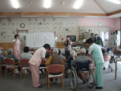
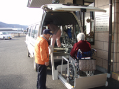
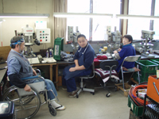

| 生活援助型訪問介護 掃除、洗濯、調理など、日常の生活の中でのご不便を感じていることをヘルパーが訪問して行います。調理・配膳・後片付け・布団干し・シーツ交換・アイロンがけ・住居の清掃・ゴミ出し・生活需品の買い物・換気、などを行わせていただきます。 |
|
| 身体介護型訪問介護 排泄や入浴の介助など、お体にかかわる介護を中心に行います。（必要に応じて家事も行うことができます。）食事介助・排泄、などを行わせていただきます。 |
（くわしい内容については、契約時にご相談下さい。）

介護支援専門員（ケアマネジャー）が介護計画（ケアプラン）介護保険の代行申請住宅改造、福祉用具レンタルなど、介護保険に関するすべての相談に応じます。
実際にサービスを受けてみて疑問に感じたり、もう少しこうして欲しい、などのご要望がありましたら、ケアマネジャーにご相談ください。その状況に応じてのプランのご提示を致します。
居宅介護支援事業所（事業者番号 2071400010） |
訪問介護員（ホームヘルパー）がご自宅へ訪問し、生活援助・身体介護のサービスを提供します。
| 生活援助型訪問介護 掃除、洗濯、調理など、日常の生活の中でのご不便を感じていることをヘルパーが訪問して行います。調理・配膳・後片付け・布団干し・シーツ交換・アイロンがけ・住居の清掃・ゴミ出し・生活需品の買い物・換気、などを行わせていただきます。 |
|
| 身体介護型訪問介護 排泄や入浴の介助など、お体にかかわる介護を中心に行います。（必要に応じて家事も行うことができます。）食事介助・排泄、などを行わせていただきます。 |
東部訪問介護事業所（事業者番号 2071400200） 西部訪問介護事業所（事業者番号 2071400192） |
西部デイサービスセンターにおいて、食事や入浴を楽しんだり、レクレーションをしたりと、一日ゆっくり過ごしていただけます。
 |
 |
ご希望のかたには自宅までの送迎を行います。 |
|
身体的機能低下等で、自宅に閉じこもりがちである人。 |
|
外に出て新しい友達がほしい人。 |
|
| 同年代のかたと交流を楽しみたい人。 | |
デイサービスに行っている間に、家族が用事をすませたい希望がある人。 |
西部デイサービスセンタ― （事業者番号 2071400242） |
茅野市社会福祉協議会では、障害者の介護や支援が必要なかたに対し、居宅介護等のサービスを実施しています。
訪問介護員（ホームヘルパー）がご自宅へ訪問し、家事援助・身体介護のサービスを提供します。
【営業日】年中無休| 家事援助型訪問介護 掃除、洗濯、調理など、日常の生活の中でのご不便を感じていることをヘルパーが訪問して行います。調理・配膳・後片付け・布 団干し・シーツ交換・アイロンがけ・住居の清掃・ゴミ出し・生活需品の買い物・換気、などをおこなわせていただきます。 |
|
| 身体介護型訪問介護 排泄や入浴の介助など、お体にかかわる援護を中心に行います。（必要に応じて家事も行うことができます。）食事介助・排泄、 などを行わせていただきます。 |
|
| 移動支援事業 外出時の移動支援（買い物介助等）を行わせていただきます。 |
東部訪問介護事業所 （指定事業者番号 2011400088） 西部訪問介護事業所 （指定事業者番号 2011400070） |
| 場所 茅野市塚原一丁目15番30号 | |
| 対象 在宅の心身障害者（身体・知的） | |
| 定員 25名 |

|
電話（0266）72‐7972 ＦＡ×(0266)72‐7972 |
 茅野市社会福祉協議会
茅野市社会福祉協議会